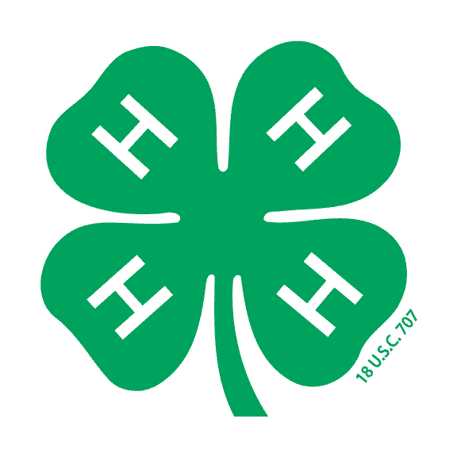
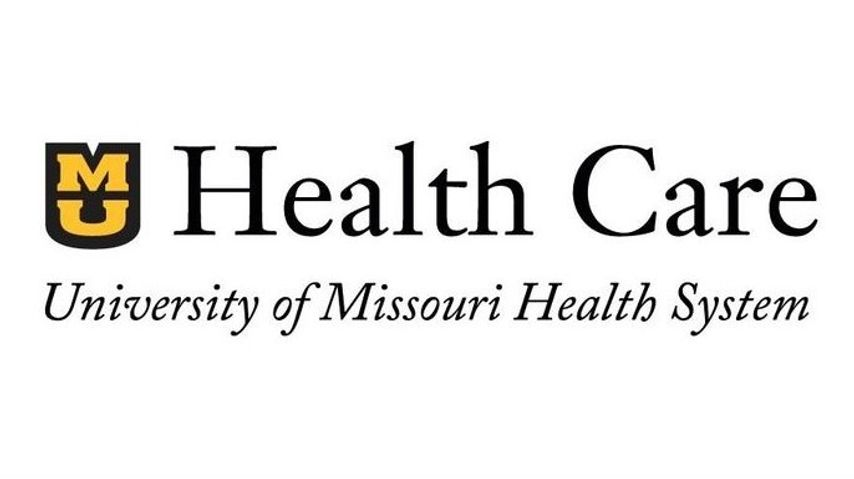

Work Experience
| Job Title | Employer | Empoyment Dates |
|---|---|---|
| Camp Counselor | Camp Clover Point | Summers of 2014-2018 |
| Customer Service Associate | Regal Cinema | 09/2017-06/2018 |
| Nutrition Associate | MU Health Care | 06/2018-Present |
4-H Camp Counselor
In high school, I volunteered as a camp counselor at a 4-H sleep away camp for a week each June. I started this in 2014 and volunteered each summer until 2018. As a camp counselor my job was to watch over my cabin of kids with the help of another volunteer. We were in charge of waking the kids up in the morning and getting them to bed, making sure our group gets to activities and meals on time, keeping track of campers to make sure no one wanders off, and providing emotional support to kids who may be upset or homesick.

Customer Service at Regal Cinema
From September of 2017 to June of 2018, I worked at Regal Cinema. At first, I worked primarily in the concession stand, so my job duties included taking food orders from customers, operating the cash register, handling money, preparing food, stocking merchandise, and keeping my work area and the lobby clean. Later, I was trained in the usher position. Here, I took customers tickets, directed them to their theater, handed out 3D glasses as needed, distributed and set up accessibility aids (closed captioning devices and headphones) when requested, cleaned theaters between showings, and indicating when theaters are ready for customers to enter.
Nutrition Associate at MU Health Care
In June of 2018 I started working at the University Hospital and I still work there currently. I work as a nutrition associate in the patient kitchen. The responsibilities for this position include washing and putting away dishes, collecting dirty food trays from patient areas, delivering food trays to patients’ rooms, taking food orders, assembling patient trays, keeping the kitchen clean and organized, and restocking items in the kitchen. Because of my experience, it is also common for me to train new employees in these different areas. Serving is what I do most frequently. In this position, my job is to take carts full of trays and deliver them to patients. When doing this I have to ensure the trays are going to the correct patients by confirming their names and birthday.
